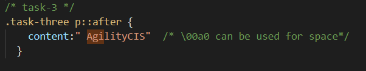

Practical Test
Task-1
Evenly spaced by default, uses flex. 8 pixel spacing through margin.
Evenly spaced by default, uses flex. 8 pixel spacing through padding.
Evenly spaced by default, uses display inline. But creates uncessasry gap apart from 8 pixels. Flex is the
best
solution.
Evenly spaced, 8 pixel spacing, but without an absolute width, keeps the 8 pixel spacing.
Task-2: Please see CSS file style.css under task-2 for CSS for this task-2.
01 Directly targeting the elements.
02 Targeting the Specificity elements based on declaration. There are several methods according to last
declaration and way weight has put
03 Using ID. Weight of ID higher than a class. But it is a relative term. Using ID just for styling is not
very common practice. ID should not be duplicated and use for JS purposes
04 Multi CSS declarations
05 Important exeption. This is not good practice but it may required but not encouraged practice. W3C
standards still supoorts though
Task-3
below p tag uses A CSS pseudo-class ::after. Please see CSS style.css under task-3 for the
class
Hello World

Task-4, Task-5, Task-6,Task-7 and Task-8 can be found in the custom.js attached to this webpage.
Screenshots are attached as well.
Task-4

Task-5

Task-6

Task-7, has omiited semicolons to increase presence

Task-8, too large for a screenshot in VS Code